- Módulo: Sistemas Operativos
- Título del trabajo Servicios de impresión.
- Componentes del grupo: Carlos Santos Carballo
- Curso Académico: 2014/2015
- Fecha de entrega: 13 de Febrero de 2015
Necesitaremos tener dos sistemas instalados, un Windows Server 2008 como servidor y un Windows 7 como cliente. En el servidor debemos instalar el software PDFCreator, instalar el Active Directory y los servicios ded impresión.
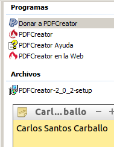
La instalación será sencilla, seguiremos los pasos de las siguientes capturas.
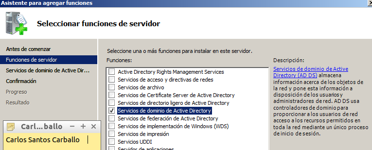

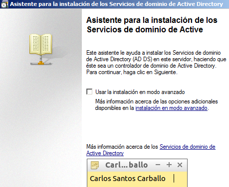
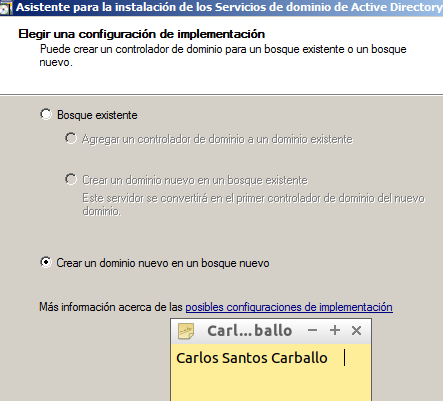
Establecemos nuestro nombre de dominio.
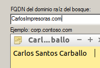
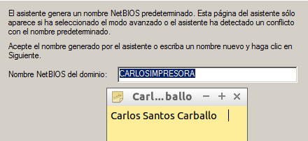

Habilitamos el servidor DNS.
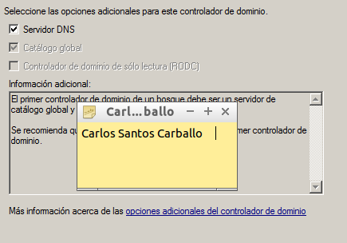
Seleccionamos la ubicación de los datos y archivos.
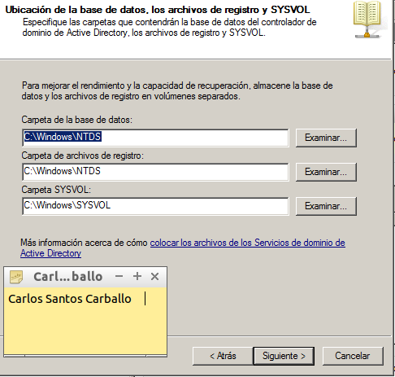
Establecemos una contraseña.
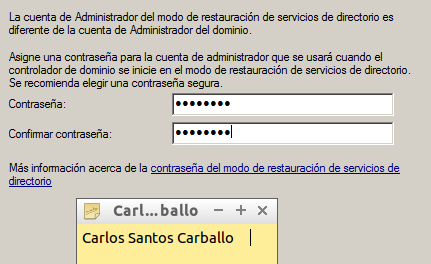
Por último finalizamos nuestra instalación.
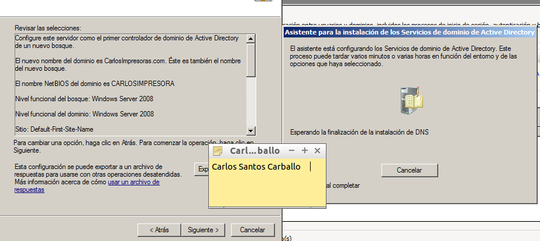
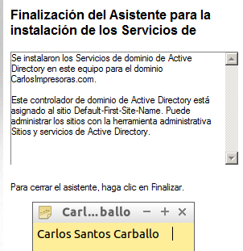
Para instalar esta función debemos acceder a la configuración del servidor y pinchar en la opción "agregar funciones".
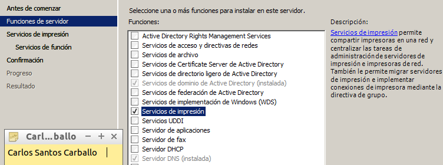
Marcamos los servicios de función "Servidor de impresión" e "impresión en internet".
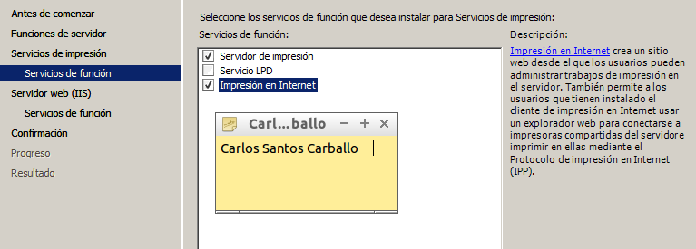
Marcamos los servicios de función para el Servidor Web IIS.
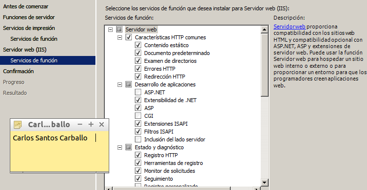
Finalizamos y comprobamos que se realizó de forma correcta.
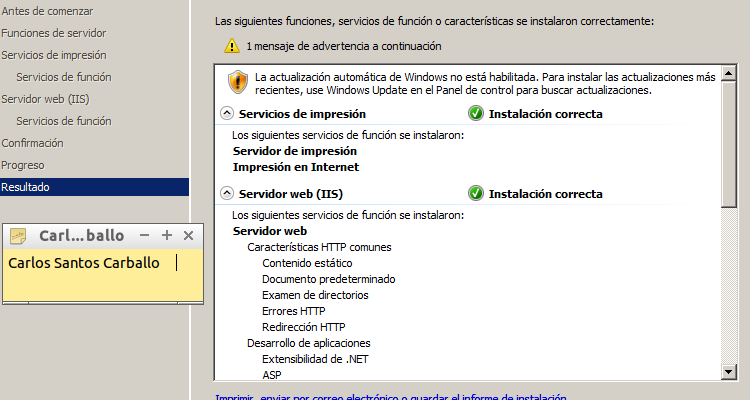
A continuación vamos a Inicio/Panel de control/Impresoras y en propiedades de la impresora PDFCreator, en la pestaña compartir, habilitamos la opción de compratir impresora y le ponemos el nombre "PDFnombreyapellidosdelalumno".
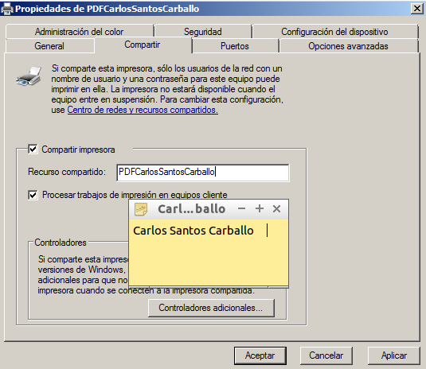
Como siguiente paso debemos agregar la impresora recientemente creada al cliente, para ello agregamos una nueva impresora, seleccionamos la opción "Agregar una impresora de red, inalámbrica o Bluetooth.
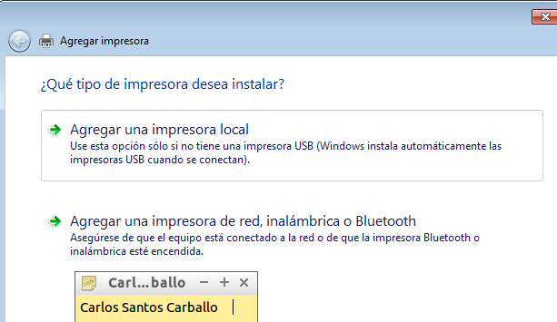
Asignamos nuestra impresora del servidor.
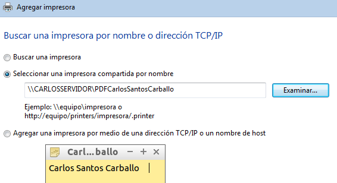
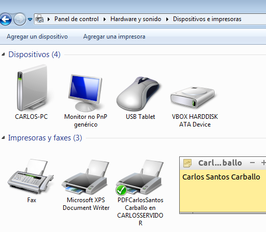
Desde el servidor comprobamos que tenemos acceso web a "http://nombre o ip del servidor/printers" para que aparezca en nuestro navegador un entorno que permite gestionar las impresoras de dicho equipo,nos aparecerá una ventana de autenticación, en el introduciremos un usuario del dominio, por ejemplo "Administrador".
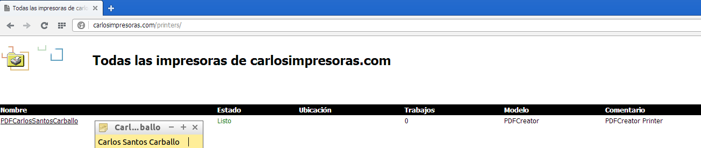
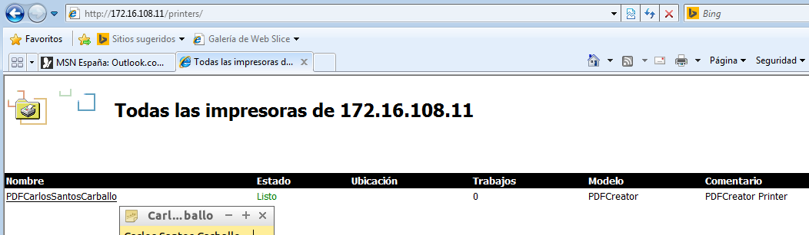
Ahora debemos ir a la configuración del PDFCreator en el servidor y activamos la función de guardado y seleccionando la carpeta de destino que queramos.A continuación generamos en el cliente un fichero de texto y le damos a la opción de imprimir con la impresora instalada.
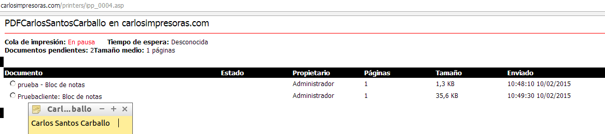
Para finalizar debemos seleccionar los ficheros deseados e iniciar la impresión, el resultado será la obtención del fichero de texto del cliente en la carpeta establecida en el servidor.
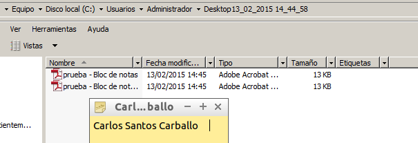
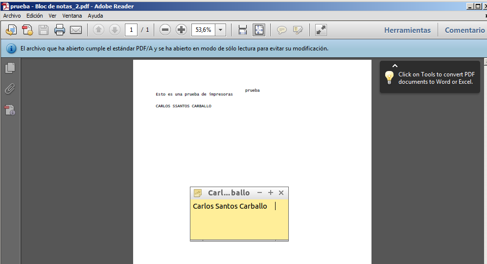